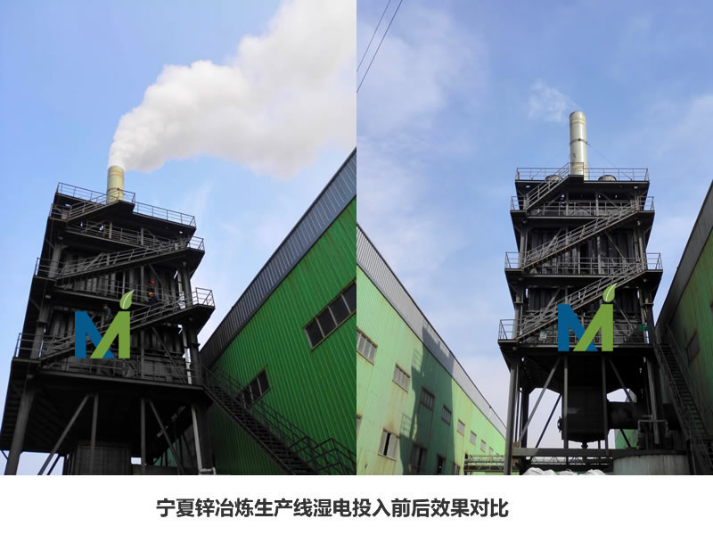
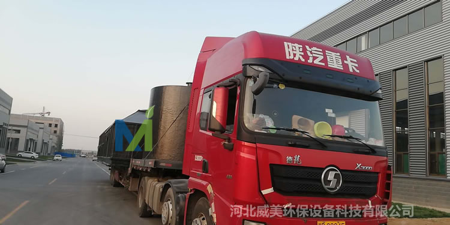
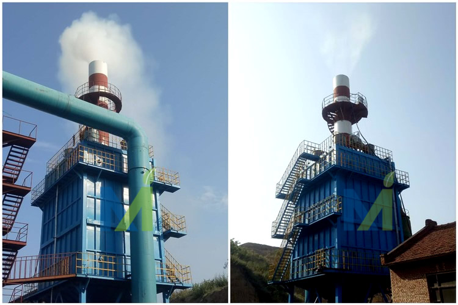

江西华邦复合材料有限公司专业从事电除雾器、湿式电除尘器及阳极管等除尘设备的研发生产
 13870005775
1387000577513870005775
邮箱：jiangxihb@163.com
伴随着秋冬供暖季的到来，对于大气环境治理工作而言是一个大的挑战，而锅炉治理是大气污染治理的重要方面，是改善环境质量的重大民生工程。生物质锅炉以成型的生物质颗粒为燃料，是一种具有压力容器资质的锅炉，生物质锅炉直接燃用生物质燃料（树木、秸秆、锯末、稻壳、蔗渣等）的锅炉，它所使用的燃烧设备其排放物燃烧产生的灰份约占燃料的1.5%左右，相比传统燃煤方式来说，其污染排放量的降低度可以说是有几倍之高。与此同时，其燃烧所用的材料也为可降解的木料、玉米杆、麦秸秆等天然物质，不仅能够防止直接就地燃烧所造成的土地破坏，最大限度的能够使其资源利用的恰到好处。另外，为了方便排灰，生物质锅炉的后部一般都布置有螺旋出渣机，可以实现连续清灰的工作。
天津生物质成型燃料锅炉大气污染物排放浓度限值

江西华邦生物质锅炉超低排放案例

使用湿式静电除尘器实现糖厂生物质锅炉超低排放效果

第二台使用湿式静电除尘器实现糖厂生物质锅炉超低排放效果
35t+45t糖厂锅炉烟气湿式静电除尘器投入使用，烟气量分别为11万气量和14万气量，进气方式来下进上出，以下是来自现场的效果图

糖厂锅炉烟气湿式电除尘器使用效果图
江西华邦复合材料有限公司，是专业从事工业大气污染处理等领域的技术研究、产品生产和系统应用工程服务为一体的高新技术环保公司。主要从事电力、化工、冶金、矿山、建材、铸造、烟草、锅炉、沥青水泥机械、粮食、机械加工、水泥等行业烟气除尘、除灰、除雾等环保工程技术开发、咨询；环保新设备、新工艺、新技术开发、推广及相关技术服务；环保设备的制作、安装、调试、技术培训一条龙服务。
湿式静电除尘设备作为一种先进的烟气治理技术，湿式电除尘技术在欧洲、美国、日本等国家已得到广泛应用且效果良好。国内企业自主开发的湿式电除尘技术，已在燃煤电厂取得成功应用。上海长兴岛第二发电厂燃煤锅炉湿法脱硫后改造工程配套电除雾器，出口粉尘排放浓度仅为6.1mg/m3，引起业界高度关注。我国也有环保企业引进国外的湿式电除尘技术，并有多家电厂签订湿式电除尘器合同，最大配套机组为1000MW。相信随着湿式电除尘技术在我国的推广应用，其必将成为满足超低排放、治理PM2.5的有力武器。
江西华邦复合材料有限公司是江西省知名的生产湿式除尘设备的制造企业，公司主营湿式电除尘器整套设备及电除雾设备配件，产品有阳极管、电除雾器、湿式电除尘器、电捕焦油器及各种材质阴极线等湿电配件。目前已有多台湿电产品运行在建材、化工、金属冶炼、锅炉、煤电行业（后附超低排放效果图）, 公司技术力量雄厚，不但拥有一支专业、高效的技术团队，而且始终坚持技术开发和品牌建设工作互相促进、共同发展的原则！以优质的产品打造提升公司的品牌形象，以良好的品牌效应促进产品技术的开发，目前，我公司已拥有多项新技术成果，公司设备遍布全国各省、市、自治区，在电力、建材、冶金、轻工、化工、硫酸等众多行业中得到广泛应用，在全国同类别产品中销量领先，并享有良好的市场信誉！

江西华邦复合材料有限公司厂区

威美湿式静电除尘器阳极管束、壳体及配件生产现场

江西华邦湿式电除尘器现场运行效果
阳极管按材料分为：导电玻璃钢阳极管，不锈钢（304、316L、2205）阳极管；
玻璃钢阳极管结构形式为内切圆360mm正6边形，壁厚3mm，长度为：6000mm；
玻璃钢阳极管介绍:http://www.cnwesp.com/product/product89.html
不锈钢阳极管结构形式为内切圆360mm正6边形，壁厚1.5mm，长度为：6000mm；
不锈钢阳极管:http://www.cnwesp.com/product/product88.html
把多根阳极管组合，形蜂窝状沉淀电极。组装并加强后，作为一个整体，与上下花板连接，阳极管制作严格按国家相关以及行业标准要求执行，合格沉淀管内表面应平整顺滑；
玻璃钢阳极管内表面含有碳纤维及阻燃剂的耐磨阻燃导电层，壁厚均匀并且管端面和轴线成直角、无毛刺，外观无任何形式的缺陷，主要导电方式是通过碳纤维粘和水膜导电；。
玻璃钢阳极管采用新技术导电玻璃钢，为CFRP导电碳纤维强化复合材料，由玻璃纤维、石墨粉、树脂材料以及各种添加剂通过模压、缠绕、手糊成型、以及防紫外线 防老化等工艺制成。内表面平整光洁易冲洗，阻燃以及抗腐蚀性强，可以抗各种酸（硫酸、盐酸、氢氟酸等）和强碱的腐蚀。其导电性、机械强度、耐温性能以及抗老化性完全满足阳极材料的使用要求由阳极管组成的管束构成湿式静电除尘器的阳极系统。

2018年6月27日，国务院全文印发《打赢蓝天保卫战三年行动计划》到2020年，二氧化硫、氮氧化物排放总量分别比2015年下降15%以上；PM2.5未达标地级及以上城市浓度比2015年下降18%以上，地级及以上城市空气质量优良天数比率达到80%，重度及以上污染天数比率比2015年下降25%以上；湿式静电除尘器WESP作为一种先进的烟气治理技术，已在欧洲、美国、日本等国家广泛应用，效果很好。国内企业自主开发的，并领先世界的湿式电除尘技术，已在300—1000MW的近百台燃煤电厂取得成功应用。达到了5mg/m3超低排放的先进水平，还可有效收集微细颗粒物（PM2.5粉尘、SO3酸雾、气溶胶）、重金属（Hg、As、Se、Pb、Cr）和有机污染物（多环芳烃、二恶英）等，其稳定可靠、效率高，彻底解决了烟囱排放问题，实现超低排放，达到燃气电厂排放水平，有了"一劳永逸"的效果，为燃煤电厂的生存提供了可靠的保证。
日益严格的排放标准
国家发展改革委、环境保护部、国家能源局于2014年9月颁发了《煤电节能减排升级与改造行动计划（2014—2020年）》的发改能源[2014]2093号文，到2020年要求煤电全部改造升级，全面达到燃气一样的清洁排放。
2015年7月1日开始，又强制执行新的国家标准《火电厂大气污染物排放标准》（GB13223-2011），对燃煤电厂烟尘特别排放限值降低至20mg/Nm3；2014年9月颁发的发改能源[2014]2093号文《煤电节能减排升级与改造行动计划（2014—2020年）》，提出了更严要求。
新的《环境空气质量标准》（GB3095-2012）。增设了PM2.5浓度限值，规定一类区的PM2.5年平均浓度限值为15μg/m3，24小时平均浓度限值为35μg/m3，二类区的PM2.5年平均浓度限值为35μg/m3，24小时平均浓度限值为75μg/m3。
2016年1月1日起，全国将实施该新标准。当前已在运行的电厂，普遍达不到新标准的要求，需要加快改造升级。因此，迫切需要寻找适合于中国国情的除尘新技术、新工艺。
一些热电机组和大型燃煤锅炉，采用湿式电除尘技术，已取得了超低排放成果，为"缺油、少气、多媒炭"的能源结构，提供了转型升级的新思路，产生重大而深远影响。
作为一种先进的烟气治理技术，湿式静电除尘器已在欧洲、美国、日本等国家广泛应用，效果很好。国内企业自主开发的，并领先世界的湿式电除尘技术，已在300—1000MW的近百台燃煤电厂取得成功应用。达到了5mg/m3超低排放的先进水平，还可有效收集微细颗粒物（PM2.5粉尘、SO3酸雾、气溶胶）、重金属（Hg、As、Se、Pb、Cr）和有机污染物（多环芳烃、二恶英）等，其稳定可靠、效率高，彻底解决了烟囱排放问题，实现超低排放，达到燃气电厂排放水平，有了"一劳永逸"的效果，为燃煤电厂的生存提供了可靠的保证。

内蒙金属冶炼湿式静电除尘器现场运行效果

江西华邦复合材料有限公司专注于烟气污染深度治理领域，致力于湿式静电除尘器、电除雾器及脱硫脱硝等烟气处理领域环保工程技术咨询、设计、制作、安装及维护等相关技术服务，湿电相关技术探讨咨询张工18633235200，以下这篇论文详述了湿式电除尘器高压恒流源需符合的标准及规范，现发给大家参考：
湿式电除尘高压电源的设计、制造、安装、验收应遵照生产商所在国以及中国的有关国家标准及规范，并应按其中较高的标准执行。
GB156-1993《标准电压》
GB1984-2003《高压断路器》
GB311.1-1983《高压输变电设备的绝缘配合》
GB311.2~311.6-1983《高电压试验技术》
DL/T404-1997《户内，户外交流高压开关柜订货技术条件》
DL/T486-1992《整流高压隔离开关订货技术条件》
DL/T593-1996《交直流高压设备的公用订货技术条件》
GB11022-89《高压开关设备通用技术条件》
GBJ149-90《电气装置安装工程母线装置施工及验收规范》
IEC-60529《外壳防护等级》
GB/T9688-1999 高压静电除尘用整流设备
GB/T191-2008 包装储运图示标志
GB/T507-2002 绝缘油介电强度测定法
GB/T2900.15-1997 电工术语 变压器
B/T6388 运输包装收发货标志
GB/T7595 运行中变压器油质量
GB/T9969 工业产品使用说明书 总则
GB/T13306 标牌
GB/T5845-1991 高压静电除尘用整流设备试验方法

湿式电除尘器是一种用来处理含微量粉尘和微颗粒的新除尘设备，主要用来除去含湿气体中的尘、酸雾、水滴、气溶胶、臭味、PM2.5等有害物质，是治理大气粉尘污染的理想设备。湿式电除尘器通常简称中文简称湿电、英文简称WESP。
湿电结构及分类
湿电有几种结构形式，一种是使用耐腐蚀导电材料（可以为导电性能优良的的非金属材料或具有耐腐蚀特性的金属材料）做集尘极，一种是用通过喷水或溢流水形成导电水膜不导电的非金属材料做集尘极。 湿式电除尘器还可分为横流式（卧式）和竖流式（立式），横流式多为板式结构，气体流向为水平方向进出，结构类似干式电除尘器；竖流式多为管式机构，气体流向为垂直方向进出。一般来讲，同等通气截面积情况下竖流式湿式电除尘器效率为横流式的2倍。
沉集在湿电极板上的粉尘可以通过水将其冲洗下来。湿式清灰可以避免已捕集粉尘的再飞扬，达到很高的除尘效率。因无振打装置，运行也较可靠。采用喷水或溢流水等方式使集尘极表面形成导电膜的装置存在着腐蚀、污泥和污水的处理问题，仅在气体含尘浓度较低、要求含尘效率较高时才采用；使用耐腐蚀导电材料做集尘极的湿式电除尘器不需要长期喷水或溢流水，只根据系统运行状况定期进行冲洗，仅消耗极少量的水，该部分水可回收循环利用，收尘系统基本无二次污染。

该电除雾设备处理烟气量70000m3/h，设计气速1.14m/s。目前江西华邦复合材料有限公司已有多台电除雾器运行在全国各大砖厂，帮助制砖企业实现超低排放，如果您的企业正在面临超低排放改造，请详询威美的技术人员，将会有专门的工程师与您对接，为您的企业量身定制低排方案，详询18633235200

电除雾器阳极系统发货

电除雾器壳体发货
电除雾器是一种用来处理含微量粉尘和微颗粒的高效节能的烟气净化设备，主要用来去除含湿气体中的尘、酸雾、水滴、气溶胶、臭味、PM2.5等有有害物质，具有收尘效率高，处理烟气量大，使用寿命长，维护费用低等优点，是治理大气粉尘污染的理想设备，在当前国内外对环保要求越来越高的情况下得到了广泛的应用。
(一) 沉淀极室
电除雾器有室内型和室外型，沉淀极室的配备，一般出于对沉淀极室清扫以及修理的考虑必须有两个以上的系统。另外，为了得到高的除雾效率，也有作成一级、二级或三级串联，在其间设置中间塔或气体冷却器或喷雾增湿管等。
气体流动方向，无论是板式或管式，大都是垂直向下或垂直向上流动的，水平流动的方式几乎不用。管式的气体分布容易均匀，可望获得较高的除雾效率，但建设费用高。
构造材料应能耐热并耐一定程度的负压，为此板式的外壳用扁钢加强的铅板，管式的用厚3．o一5．Omm左右的铅制圆筒(用扁钢加强)。为了用高压水冲洗附在电极线和沉淀极上的粉尘(砷及硒泥等)，往往在上部常备有水洗用配管。
最近已经造出用合成树脂制的沉淀极室，并已在实际中使用。

山西砖厂电除雾器烟气量不大于100000m3/h，设计气速为1m/s
(二) 放电电极
放电电极由于要耐硫酸而包铅，所以线径较大，使电晕放电困难。为了避免这种现象，添加几个棱边以减小曲率半径。形式大多数采用6—9mm直径做成星型(铜心直径1—2mm)，也有用软钢心线，或用不锈钢心线或者无心线的。
(三) 沉淀极
沉淀极用铅板，板式、管式通常都用3mm厚的铅板。另外，作为特殊的例子也可以用钢板包铅。最近正在推广的塑料电除雾器的沉淀电极，是用聚氯乙烯板两面层压以聚氯乙烯和石墨粉混捏而赋予导电性的聚氯乙烯而成，或用增强聚氯乙烯电极板，或用石墨层压板。对电极的尺寸，板式多数用宽2—3mm、高3—4mm左右的，管式多数用直径200—250mm左右、高4．Om左右的。
(四) 气体分布装置
电除雾器使用的气体分布装置，有多孑L板型、导向板型、分配型、竹席型、格栅型等。材料以铅或聚氯乙烯居多。
(五) 监视用的视镜
为监视除雾状态在沉淀极室侧面、上部或出口气体管道上安装玻璃视镜。另外，还有使用光电管监视气体中酸雾浓度的方法。在进行监视的气体管道上设置横穿两侧的玻璃视镜，一侧安装投光器，另一侧安装光电管。气体中酸雾含量高透过的光束减少，则光电流减少。所以能够根据电流计的读数，从远方监视气体状态。
除了上述零件以外，电除雾器还附有进出口插板，凝集酸排液装置等。
电除雾器的运行安全
(1)电源设备
为使电除雾器高效运转，希望经常加上尽可能高的电压。所以，对导电部分和大地的绝缘，支承物的构造，以及材料等应当予以特别注意。如有水分、粉尘附着在绝缘瓷瓶表面上，或混入电除雾器的绝缘油中，电气绝缘就会显著恶化，使有效电压降低。经过彻底清扫的绝缘瓷瓶用1000V兆欧计测量其绝缘电阻大致上是无限大，至少应以20Mn以上作为基准。绝缘瓷瓶应该根据使用状况、环境来决定其定期清扫周期。此外，应把绝缘瓷瓶放在箱内并送入热风以免受到湿气体和粉尘的影响。
晶闸管整流的场合，温度对其工作特性和寿命有影响，所以有必要注意晶闸管周围温度的上升情况。
晶闸管整流器收藏在贮槽内，由于经常受绝缘油等的冷却，所以没有温度上升的问题，但是要注意吸湿呼吸器等的污染。如果吸湿呼吸器受到污染，水分等进入贮槽的绝缘油中，往往会引起绝缘恶化。
(2)收尘室
除尘装置中气体温度在露点以下会引起化学腐蚀，由于H20—H2SO4冷凝而引起绝缘物表面上漏电，或在电极线上黏附粉尘，或者生成绝缘性的覆盖膜，所以应该经常使气体温度保持在露点以上。另一方面也要注意在500℃以上的高温下， 由于构件的热应力而产生的故障。一般来说，希望在比含S02、SO3的混合气体的露点高50℃左右的温度下操作。
对于电除雾器，为防止效率降低，希望在40℃以下的条件下进行运转。
(3)酸雾的排出
对电除雾器来说，捕集下来的酸雾是从室内下部向室外作为排放液逐渐排出。由于排放液中的金属化合物等会堵塞排出管，引起进气室内积酸而招致气体阻力增大，所以需要加以注意。
(4)除雾室的清扫
除雾室长期运转后，除尘效率逐渐降低。所以必须在适当的时期打开清扫。定期清扫的周期根据矿的品种、焙烧炉形式、操作状态等决定。
(5)放电电极的更换
电除尘器的放电电极由于粉尘的粘附、绝缘皮膜的形成以及腐蚀、安装质量不好而引起断线，或者由于不可能纠正的弯曲等原因需要予以更换。使用硫磺矿及锌矿时，放电电极往往有形成绝缘皮膜的现象。一般是1～5年全部更换一次。除雾装置放电电极更换的理由大致上也与除尘装置相同星型突出部分破损厉害时也需要更换。
(6)绝缘瓷瓶
绝缘瓷瓶的破坏、龟裂是经常发生的，这会招致不能外加高电压或不能送电。其原因如下。
冷凝漏电：由于收尘室在运转中温度降低，SOs在表面上冷凝，往往发生漏电，所以必须在适当的温度下(出口300℃)运转。安装作业中的破坏：安装作业要谨慎，必须注意不要碰撞或安装不合适。
(7)油封用绝缘油
电除雾器使用油封时，绝缘油直接与外面气体、炉气接触、所以尘埃、酸雾、水分等进入而使绝缘变得非常不好。由于液面放电或悬浮尘埃的电桥闪络而不能施加高的电压，进而还会发生火灾放电，并有可能发生火灾，所以应该尽量使用绝缘良好的绝缘油。另外，必须定期进行绝缘耐力试验及除去混入水分的作业。长期使用后的绝缘油由于绝缘能力恶化，1～2年需要更换再生一次。

本文对烟羽形成的影响因素和主流治理技术的特点及其原理进行了阐述,并结合湿烟羽的特性探索了一条可行的烟气脱白节能路径,对烟羽现象的治理具有一定的参考价值。
▲ 来源：《上海节能》 作者：王宗民
目前国内较多燃煤电厂采用石灰石-石膏湿法脱硫工艺进行烟气脱硫,脱硫后烟气为饱和湿烟气,直接排放后易形成＂烟羽＂。目前国内外已有针对＂湿烟羽＂治理的相关技术措施。本文对烟羽形成的影响因素和主流治理技术的特点及其原理进行了阐述,并结合湿烟羽的特性探索了一条可行的烟气脱白节能路径,对烟羽现象的治理具有一定的参考价值。
1. 引言
目前我国燃煤电厂90%以上机组的脱硫设施采用的是石灰石—石膏湿法脱硫工艺。此脱硫工艺一般采用喷淋洗涤技术，去除烟气中的二氧化硫，与此同时大量水被气化后进入烟气之中，导致烟气温度降低到与烟气的水露点温度接近。随着我国燃煤电厂超低排放改造的推进，大部分电厂湿法脱硫装置取消了GGH。烟气经过湿法脱硫石膏浆液的洗涤，温度降至45~55℃，呈饱和状态。
烟囱排出的湿烟气与温度较低的环境空气发生接触，烟气降温，在此过程中烟气中所含水蒸汽过饱和凝结，凝结水滴对光线产生折射、散射，从而使烟羽呈现出白色或者灰色的"湿烟羽"（俗称"大白烟"、"白雾"等）。湿烟气排放时，"烟羽"的抬升高度会有所降低，扩散效果相对较差，污染物在烟囱附近的落地浓度会增加，加重灰霾现象，影响能见度。在环境温度低、除雾效果较差时，则有可能发生"烟囱雨"现象，同时不利于烟气抬升扩散，甚至会加剧局部酸雨，腐蚀工程设施及建筑物等。湿烟羽现象严重影响了电厂周边居民的生产生活，削弱了公众对环境保护工作的满意度，相当一部分燃煤电厂附近的居民对湿烟羽的治理提出了相关诉求，地方有关政府部门也对湿烟羽的控制提出了要求。
随着国家对污染物排放要求的提高，当前燃煤电厂烟气排放污染物对环境的污染已经大幅下降。烟气经除尘、脱硫、脱硝、脱汞等措施后有效控制了颗粒物、硫氧化物、氮氧化物和汞等污染物的排放。"烟羽现象"是湿烟气中水汽凝聚产生的小水滴，不会对环境造成严重污染。与同等干烟气排放的污染物相比，排放总量并不会发生变化。目前国内外对于湿烟羽的成因以及拟采取的对策并没有系统性的研究分析，本文就湿烟羽的成因，目前对湿烟羽治理效果的解决技术和节能消"烟"措施等三方面进行论述。

2. 影响烟羽形成的因素
湿法脱硫是一个气液交换过程，逆流喷淋脱硫塔的气液相互作用十分强烈，会对脱硫浆液的液滴产生携带。"湿烟羽"和"石膏雨"主要就是吸收塔内的液态水、净烟气在烟囱中降温的冷凝水以及携带的浆液滴随烟气排放形成的。其中造成这种现象主要因素有环境因素、工艺设计、除雾器性能、烟气特性以及运行参数等。环境因素主要包括环境温度、风速、气压和大气相对湿度等。工艺设计包含烟囱中烟气液滴的携带量、脱硫塔内烟气流速、塔内流场分布、液气比、脱硫浆液的雾化程度等。烟气特性主要指湿烟气的排烟温度，烟气中含有的粉尘、石膏浆液，二氧化碳、硫氧化物、氮氧化物和水蒸汽等。烟气处理设备与机组同步运行过程中，实际运行的烟气量、除尘器的效率、脱硫塔的浆液品质以及烟囱排烟温度等运行参数都会对烟羽现象的形成产生重要的影响。
3. 主要消除技术
消除烟羽是一个综合治理的过程，应从以下几方面着手:
（1）降低烟气的绝对含湿量；
（2）降低烟气的相对含湿量；
（3）控制烟气中SO3的生成及排放，控制NOx的排放并合理喷氨；
（4）去除亚微米颗粒和酸雾，减少酸性气溶胶的产生。对此根据"烟羽现象"的基本成因原理，结合实际生产，治理手段大致可分为三大类：烟气加热技术、烟气冷凝技术和烟气冷凝再热技术。
3.1 烟气加热技术
烟气加热技术是对进入烟囱前的湿饱和烟气进行加热，将湿烟气的温度升高，保持湿烟气的绝对含湿量不变，相对含湿量减小，使得烟气相对湿度小于升温后的饱和湿度，从而达到消除烟羽的技术要求。
目前烟气加热技术按换热方式可以分为间接换热和直接换热两类。间接加热技术主要有回转式GGH，管式GGH，热管式GGH，MGGH和蒸汽加热器等；直接加热技术主要有热二次风混合加热，燃气直接加热，热空气混合加热等3种。
3.2 烟气冷凝技术
烟气冷凝技术是对烟囱入口前的湿饱和烟气进行冷却，将湿烟气的温度降低，在降温过程中含湿量大幅下降，减小湿烟气的绝对含湿量。该技术可以回收大量烟气凝结水、降低烟气中烟尘、Hg、SO3等多种污染物的浓度。
烟气冷凝技术主要有镶边凝聚器、冷凝析水器、脱硫零补水系统和烟气余热回收与减排一体化系统等。按换热方式分有为间接换热（如管式换热器）和直接换热（如喷淋塔）两类。按冷源的不同又可分为水冷源、空气冷源和其他人工冷源等三种。
3.3 烟气冷凝再热技术
烟气冷凝再热技术是上述两种方式的组合使用。它的湿烟羽消除机理是通过降温减少湿烟气中的绝对含湿量，使烟气中饱和水汽析出成凝结水，再将烟气再热降低湿烟气的相对含湿量，从而消除烟羽。
3.4 其它消除措施
根据燃煤电厂"烟羽现象"产生的原因，还可以采取一些可行的措施，如混煤燃烧，采用混煤燃烧的方式降低烟气中的含硫量，从源头减少SO3的产生；也可在燃烧中或燃烧后喷碱性吸收剂，从炉膛顶部或选择在催化还原装置后向炉膛或烟道内喷洒碱性吸收浆液，其与SO3发生反应生成硫酸盐，随飞灰通过除尘装置脱除。美国的Gavin电厂炉膛喷镁脱硫效果显著，当Mg/SO3摩尔比为7时，SO3的脱除效率可达到90%。除此之外，开发新型SCR催化剂，如BiOIO3、CuO/TiO2等，降低SCR中SO3的转化。
4. 新型消"烟"技术
根据"烟羽现象"的形成机理以及消除技术，可考虑效仿烟气换热器——位于发电厂电除尘器的上游或下游，通常是一种具有逆流排列的管式换热器，在脱硫塔下游布置一级烟气冷凝装置用于对湿烟气降温，将其中的水蒸气凝结出来收集。通过换热降低烟气的温度，将热量从烟气转移到冷却介质，冷却介质可取自凝汽器的循环冷却水，其温度为30℃左右，使该换热器具有低温省煤器的作用，预先加热锅炉给水。也可取自外部水源，给水进口温度:冬季5～15℃，夏季15～25℃，换热后可达到35~40℃。
另外，可将烟气冷凝装置单独改造成一个供暖系统，提供低品位热水，供给地暖热用户采暖。常规暖气散热片对热水温度要求较高，要求供水温度达到70℃左右，而地暖采暖所要求的供水温度只需要50℃以下，回水温度约25℃左右，通过利用地暖的优势，可实现对冷源的循环再利用。
这样尾部烟气冷凝装置的水循环流程可以分为两个单独的循环回路，一回路为:冷凝器→烟气冷凝装置→省煤器→循环水泵→锅炉→过热器→汽机，该回路用于燃煤电厂正常生产活动;二回路为：外部水源→烟气冷凝装置→循环水泵→用户，此回路主要用于采暖类型为地暖的用户。由此运行后，锅炉热效率可以得到有效的提高，实现了冷源水的再利用，同时一定程度上消除"烟羽现象"。
5. 总结
对采用湿法脱硫工艺的燃煤电厂普遍存在的"烟羽现象"，其主要原因是脱硫塔脱硫后的烟气中含有固体颗粒物的液态水和汽态水，根本原因为进入烟囱的烟气为饱和湿烟气。通过对现有烟羽治理相关技术的阐述，结合当前电厂节能减排的技术要求，提出了一种可有效凝结析出饱和烟气中水蒸气的办法，缓解了烟羽的发生，同时冷源也得到了良好的利用，对未来的烟羽治理有一定的借鉴意义。

Copyright © 江西华邦复合材料有限公司 All Rights Reserved 冀ICP备18007757号-2
江西华邦复合材料有限公司专业从事电除雾器、湿式电除尘器及阳极管等除尘设备的研发生产
地址：江西省贵溪市工业园区 销售电话：13870005775 周智文，13907038182 沈伟